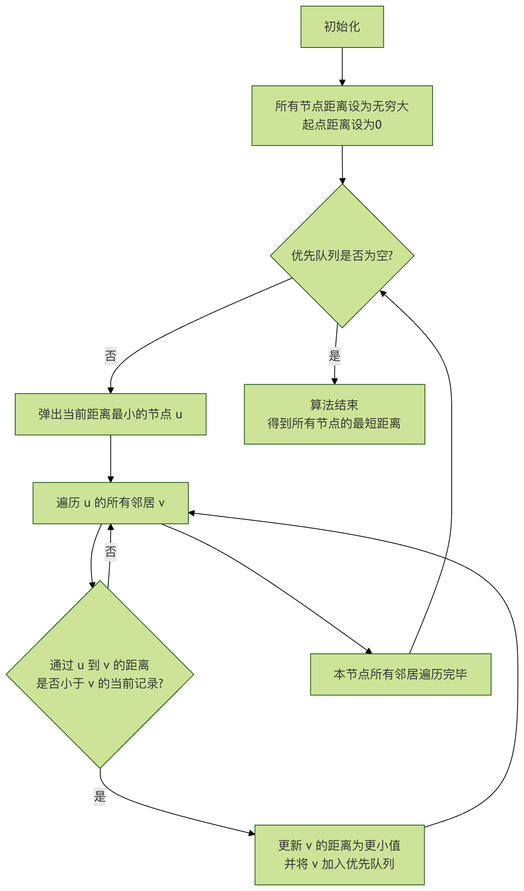

高级图算法
在前面的基础教程中，我们已经学习了图的基本概念、表示方法以及广度优先搜索（BFS）和深度优先搜索（DFS）等基础算法，这些算法帮助我们解决了诸如两点之间是否连通、图的遍历等问题。
然而，现实世界中的许多复杂问题，比如社交网络中的好友推荐、地图导航中的最短路径规划、物流配送中的最优路线安排，甚至是互联网网页的排名，都需要更强大、更高效的算法。这些就是高级图算法要解决的挑战。
高级图算法就像是为解决特定复杂问题设计的专业工具：
- 网络流：解决流量分配问题，如交通、物流
- 二分图匹配：解决配对问题，如任务分配、婚姻匹配
- 强连通分量：分析图的连通结构
- 拓扑排序：解决依赖关系问题
现实生活案例：
- 网络流：像是城市交通系统的流量优化
- 二分图匹配：像是婚恋配对系统
- 强连通分量：像是社交网络中的朋友圈分析
- 拓扑排序：像是任务依赖关系的排序
| 问题类型 | 普通算法 | 高级图算法 |
|---|---|---|
| 流量优化 | 难以建模和解决 | 网络流算法专门解决 |
| 配对问题 | 暴力搜索效率低 | 二分图匹配高效解决 |
| 连通性分析 | 基础DFS/BFS信息有限 | 强连通分量提供深入分析 |
| 依赖排序 | 难以处理复杂依赖 | 拓扑排序完美解决 |
最短路径问题与 Dijkstra 算法
想象一下，你正在使用地图 App 规划从家到公司的路线。地图上有无数条路径，每条路径的通行时间（权重）不同。你的目标是找到总通行时间最短的那条路，这就是经典的单源最短路径问题。
算法核心思想
Dijkstra 算法是解决非负权重图单源最短路径问题的贪心算法。它的核心思想像一个谨慎的探索者：
- 它维护一个"已知最短距离"的集合。
- 每次都从"未知区域"中挑选一个当前离起点距离最短的节点，确认它的最短距离。
- 然后利用这个新确认的节点，去更新它所有邻居的"预估最短距离"。
- 重复这个过程，直到所有节点的最短距离都被确认。
算法步骤详解
让我们通过一个流程图来直观理解 Dijkstra 算法的执行过程：

流程图说明：算法从初始化开始，不断从优先队列中取出当前离起点最近的未处理节点，用它来松弛（更新）其邻居节点的距离估计值，直到队列为空，此时所有最短路径均已确定。
代码实现与示例
下面我们使用 Python 来实现 Dijkstra 算法。我们将使用heapq这个优先队列（最小堆）模块来高效地获取当前距离最小的节点。
实例
def dijkstra(graph, start):
"""
使用 Dijkstra 算法计算从起点 start 到图中所有其他节点的最短距离。
参数:
graph: 字典表示的邻接表。格式为 {节点: [(邻居1, 权重1), (邻居2, 权重2), ...]}
start: 起始节点。
返回:
一个字典，包含所有节点到起点的最短距离。
"""
# 初始化：所有节点的最短距离设为无穷大
shortest_distances = {node: float('inf') for node in graph}
shortest_distances[start] = 0 # 起点到自己的距离为0
# 使用优先队列（最小堆），元素为 (当前距离, 节点)
priority_queue = [(0, start)]
while priority_queue:
current_distance, current_node = heapq.heappop(priority_queue)
# 如果当前取出的距离大于记录中的距离，说明是旧数据，跳过
if current_distance > shortest_distances[current_node]:
continue
# 遍历当前节点的所有邻居
for neighbor, weight in graph[current_node]:
distance = current_distance + weight
# 如果找到更短的路径，则更新
if distance < shortest_distances[neighbor]:
shortest_distances[neighbor] = distance
heapq.heappush(priority_queue, (distance, neighbor))
return shortest_distances
# --- 测试示例 ---
# 定义一个带权重的有向图 (节点: [(邻居, 权重), ...])
test_graph = {
'A': [('B', 4), ('C', 2)],
'B': [('C', 1), ('D', 5)],
'C': [('B', 1), ('D', 8), ('E', 10)],
'D': [('E', 2)],
'E': []
}
start_node = 'A'
distances = dijkstra(test_graph, start_node)
print(f"从节点 {start_node} 出发到各节点的最短距离：")
for node, dist in distances.items():
print(f" 到节点 {node}: {dist}")
代码解析：
shortest_distances字典用于记录从起点到每个节点的最终确认的最短距离，初始值为无穷大。priority_queue是一个最小堆，总是让我们能快速取出"当前预估距离起点最近"的节点。- 主循环中，
heapq.heappop取出堆顶节点（当前最近节点）。 if current_distance > ... : continue是一个关键优化，用于处理堆中可能存在的同一节点的多个旧版本（距离值）。- 遍历邻居时，计算
distance = current_distance + weight，这就是"通过当前节点到达邻居的新距离"。 - 如果新距离更短，则更新
shortest_distances并将邻居及其新距离推入堆中，以便后续处理。
运行上述代码，你会得到如下输出：
从节点 A 出发到各节点的最短距离： 到节点 A: 0 到节点 B: 3 # 路径: A -> C -> B 到节点 C: 2 # 路径: A -> C 到节点 D: 8 # 路径: A -> C -> B -> D 到节点 E: 10 # 路径: A -> C -> B -> D -> E
最小生成树与 Prim 算法
现在考虑另一个问题：你要为一个新建的居民区铺设光纤网络，需要连接所有房子，但为了节省成本，希望使用的光纤总长度最短。已知每两栋房子之间铺设光纤的成本（权重）。如何选择要铺设的线路？
这个问题要求我们找到一个连接所有节点的子图，并且这个子图是一棵树（无环），同时其所有边的权重之和最小。这棵树就叫做最小生成树（MST）。
Prim 算法思想
Prim 算法是寻找 MST 的一种贪心算法。它的过程很像"生长一棵树"：
- 从任意一个节点开始，将这棵树初始化为只包含该节点。
- 在所有连接这棵树内部节点和外部节点的边中，选择一条权重最小的边。
- 将这条边以及它连接的那个外部节点加入到树中。
- 重复步骤 2 和 3，直到所有节点都被包含进树中。
代码实现与示例
Prim 算法的实现与 Dijkstra 非常相似，区别在于距离的定义。
在 Prim 算法中，我们维护的是每个节点到当前生成树的最小连接代价。
实例
def prim_mst(graph):
"""
使用 Prim 算法计算图的最小生成树（MST）的总权重。
参数:
graph: 字典表示的邻接表。格式为 {节点: [(邻居1, 权重1), (邻居2, 权重2), ...]}
假设图是连通的。
返回:
最小生成树的总权重。
"""
start_node = list(graph.keys())[0] # 从任意节点开始，这里取第一个
visited = set([start_node]) # 已加入 MST 的节点集合
# 优先队列，存储 (边权重, 邻居节点)
# 初始化：将起始节点的所有边加入队列
edges = [(weight, start_node, neighbor) for neighbor, weight in graph[start_node]]
heapq.heapify(edges)
total_weight = 0
while edges:
weight, from_node, to_node = heapq.heappop(edges)
if to_node not in visited:
visited.add(to_node) # 将新节点加入 MST
total_weight += weight # 累加 MST 总权重
print(f"添加边: {from_node} - {to_node}, 权重: {weight}") # 输出选择的边
# 将新节点的所有连接外部节点的边加入队列
for neighbor, w in graph[to_node]:
if neighbor not in visited:
heapq.heappush(edges, (w, to_node, neighbor))
return total_weight
# --- 测试示例 ---
# 定义一个无向带权图（每条边在邻接表中出现两次）
test_graph_undirected = {
'A': [('B', 4), ('C', 2)],
'B': [('A', 4), ('C', 1), ('D', 5)],
'C': [('A', 2), ('B', 1), ('D', 8), ('E', 10)],
'D': [('B', 5), ('C', 8), ('E', 2)],
'E': [('C', 10), ('D', 2)]
}
print("构建最小生成树的过程：")
mst_weight = prim_mst(test_graph_undirected)
print(f"\n最小生成树的总权重为: {mst_weight}")
代码解析：
visited集合记录已经属于 MST 的节点。edges是一个最小堆，存储所有横跨 MST 内外的边（即一端在visited中，另一端不在）。- 主循环中，总是从堆中取出权重最小的边
(weight, from_node, to_node)。 - 如果这条边连接的
to_node还未被访问，则它是一条有效的 MST 边。将其加入结果，并更新visited和total_weight。 - 将新节点
to_node的所有通向外部节点的边加入堆中，供下一轮选择。
运行上述代码，你会看到 MST 的构建过程：
构建最小生成树的过程： 添加边: A - C, 权重: 2 添加边: C - B, 权重: 1 添加边: A - B, 权重: 4 # 注意：这条边连接B和A，但B已在树中，所以会被下一行的if语句跳过，不会添加。 添加边: B - D, 权重: 5 添加边: D - E, 权重: 2 最小生成树的总权重为: 10
（注：实际输出中，A - B这条边因为to_nodeB 已在visited中，所以不会执行print语句。上面注释是为了说明。）最终 MST 的边是 A-C, C-B, B-D, D-E，总权重为 2+1+5+2=10。
拓扑排序：处理有依赖关系的任务
当你需要安排一系列任务，并且某些任务必须在另一些任务完成之后才能开始（例如，穿袜子必须在穿鞋之前），你会如何确定一个合理的执行顺序？这种任务间的依赖关系可以用有向无环图（DAG）来表示，而找到一个可行的线性执行顺序的过程，就是拓扑排序。
Kahn 算法（基于入度）
Kahn 算法是拓扑排序最直观的算法之一，基于入度（指向该节点的边数）。
- 找到所有入度为 0 的节点，它们是可以立即执行的任务（没有前置依赖）。
- 将这些节点放入一个队列，并从图中"移除"（输出到排序结果）。
- "移除"节点后，更新其所有邻居的入度（减1）。如果某个邻居的入度因此变为 0，则将其加入队列。
- 重复步骤 2 和 3，直到队列为空。
- 如果输出的节点数等于图中总节点数，则排序成功；否则，说明图中存在环，无法拓扑排序。
代码实现与示例
实例
def topological_sort_kahn(graph):
"""
使用 Kahn 算法进行拓扑排序。
参数:
graph: 字典表示的邻接表。格式为 {节点: [邻居1, 邻居2, ...]}
返回:
如果存在拓扑排序，返回一个列表（排序顺序）；否则返回 None（存在环）。
"""
# 1. 计算所有节点的入度
in_degree = {node: 0 for node in graph}
for node in graph:
for neighbor in graph[node]:
in_degree[neighbor] = in_degree.get(neighbor, 0) + 1
# 2. 初始化队列，将所有入度为0的节点入队
queue = deque([node for node in in_degree if in_degree[node] == 0])
topo_order = []
# 3. 处理队列
while queue:
current_node = queue.popleft()
topo_order.append(current_node)
# "移除"当前节点，更新其邻居的入度
for neighbor in graph.get(current_node, []):
in_degree[neighbor] -= 1
if in_degree[neighbor] == 0:
queue.append(neighbor)
# 4. 检查是否所有节点都被排序
if len(topo_order) == len(graph):
return topo_order
else:
return None # 图中存在环
# --- 测试示例 ---
# 定义一个课程依赖关系的有向图
# 例如：上算法课（Algo）之前需要先上数据结构课（DS）
course_graph = {
'程序设计': ['数据结构', '算法'],
'数据结构': ['算法', '数据库'],
'算法': ['机器学习'],
'数据库': ['系统设计'],
'数学': ['机器学习'],
'机器学习': [],
'系统设计': []
}
print("课程依赖图：")
for course, deps in course_graph.items():
print(f" {course} -> {deps}")
result = topological_sort_kahn(course_graph)
if result:
print(f"\n一种可行的课程学习顺序（拓扑排序）为：")
print(" -> ".join(result))
else:
print("\n课程安排存在循环依赖，无法排序！")
代码逐行解析：
in_degree字典记录每个节点的入度。遍历邻接表即可计算出每个节点被多少条边指向。- 初始化队列
queue，将所有"没有前置任务"（入度为0）的节点加入。 - 主循环中，从队列取出节点，加入结果列表
topo_order，相当于完成该任务。 - 遍历该任务的所有后继任务（邻居），将其入度减1。如果减到0，说明该任务的所有前置任务都已完成，可以加入队列等待执行。
- 最后检查排序结果的长度。如果与图节点数相同，则成功；否则，意味着有些节点始终有前置依赖（入度不为0），即图中存在环。
运行上述代码，你会得到一种可行的学习顺序：
课程依赖图： 程序设计 -> ['数据结构', '算法'] 数据结构 -> ['算法', '数据库'] 算法 -> ['机器学习'] 数据库 -> ['系统设计'] 数学 -> ['机器学习'] 机器学习 -> [] 系统设计 -> [] 一种可行的课程学习顺序（拓扑排序）为： 程序设计 -> 数学 -> 数据结构 -> 算法 -> 数据库 -> 机器学习 -> 系统设计
注意：拓扑排序的结果可能不唯一。例如，数学和程序设计都是入度为 0 的起始节点，谁先谁后都可以。
算法对比与应用场景
为了帮助你更好地理解和选择这些算法，下表总结了它们的关键特点：
| 算法 | 主要用途 | 适用图类型 | 核心思想 | 时间复杂度（使用优先队列） | 典型应用场景 |
|---|---|---|---|---|---|
| Dijkstra | 单源最短路径 | 带非负权重的有向/无向图 | 贪心，每次扩展当前距离起点最近的节点 | O((V+E) log V) | 地图导航、网络路由 |
| Prim | 最小生成树（MST） | 带权重的连通无向图 | 贪心，每次将离当前生成树最近的节点并入 | O((V+E) log V) | 网络布线、电路板设计、聚类分析 |
| Kahn (拓扑排序) | 任务调度排序 | 有向无环图（DAG） | 基于入度，不断移除无前置依赖的节点 | O(V+E) | 课程安排、构建系统依赖、编译顺序 |
实践练习
光看不够，动手实践才能融会贯通！请尝试完成以下练习：
练习 1：修复 Dijkstra 算法
下面的代码意图实现 Dijkstra 算法，但有几处 bug。请找出并修复它们。
实例
def wrong_dijkstra(graph, start):
dist = {node: float('inf') for node in graph}
dist[start] = 0
pq = [(0, start)]
while pq:
cur_dist, cur_node = pq.pop(0) # 这里可能有问题
for neighbor, weight in graph[cur_node]:
if cur_dist + weight < dist[neighbor]:
dist[neighbor] = cur_dist + weight
# 这里可能少了点什么
return dist
练习 2：实现 Kruskal 算法
Prim 算法是找 MST 的一种方法，另一种经典方法是Kruskal 算法。其思想是：
- 将图中所有边按权重从小到大排序。
- 按顺序考虑每条边，如果这条边连接的两个节点不在同一个连通分量中（即加入后不会形成环），则将它加入 MST。
- 重复步骤2，直到 MST 中有 V-1 条边（V为节点数）。
你的任务：尝试使用"并查集（Disjoint Set Union, DSU）"数据结构来实现 Kruskal 算法，用于高效判断两个节点是否连通。
练习 3：实际数据挑战
假设你有一个friendships.json文件，记录了社交网络中用户（ID表示）及其好友关系。每条关系有一个"亲密度"权重。
[
{"user_id": 1, "friend_id": 2, "closeness": 5},
{"user_id": 1, "friend_id": 3, "closeness": 2},
{"user_id": 2, "friend_id": 3, "closeness": 1},
{"user_id": 2, "friend_id": 4, "closeness": 6},
{"user_id": 3, "friend_id": 4, "closeness": 3},
{"user_id": 4, "friend_id": 5, "closeness": 4}
]
问题：如果"亲密度"权重可以看作距离（数值越小代表越亲密），请计算从用户1出发，到其他所有用户的"最亲密路径"（即权重和最小的路径）。你应该使用哪个算法？请编写代码解决。
点我分享笔记
<p style="font-size:14px;">笔记需要是本篇文章的内容扩展！</p><br> <p style="font-size:12px;"><a href="../tougao.html" target="_blank">文章投稿，可点击这里</a></p> <p style="font-size:14px;"><a href="../w3cnote/runoob-user-test-intro.html" target="_blank">注册邀请码获取方式</a></p> <h3 class="text-muted"><i class="fa fa-info-circle" aria-hidden="true"></i> 分享笔记前必须<a href=";.html" class="runoob-pop">登录</a>！</h3> <p><a href="../w3cnote/runoob-user-test-intro.html" target="_blank">注册邀请码获取方式</a></p>